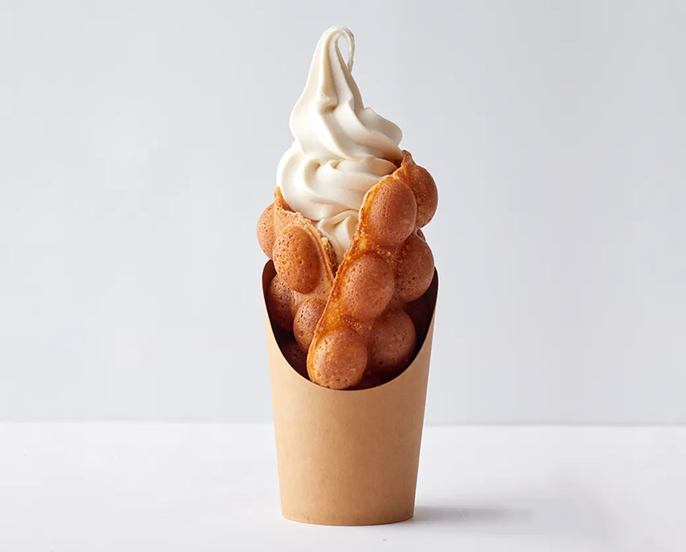
看板メニュー
ワッフル純豆乳ソフトクリーム
フルサイズ ¥900 / ハーフサイズ ¥690 （税込）
当店を代表する一品です。温かく、外はカリッと中はもちもちの新潟県産米粉100％のバブルワッフルで、濃厚でなめらかな朝搾りの豆乳ソフトクリームを包みました。和のトッピング5種（抹茶、きなこ、ほうじ茶、チョコソース、黒蜜）を、無料のトレーでお付けします。ふんわりした豆乳ホイップクリームに変更することもできます。
毎日 11:00〜22:00 営業
福岡・薬院 · 地下鉄薬院大通駅 2番出口から徒歩2〜3分
新潟県産米粉の焼きたてバブルワッフル、朝搾りの純豆乳ソフトクリーム、焼きドーナツ、クラフトジェラート。小麦・乳製品・卵・白砂糖を使わずにつくっています。
Googleマップ評価 4.7（口コミ250件以上）· HappyCowにも掲載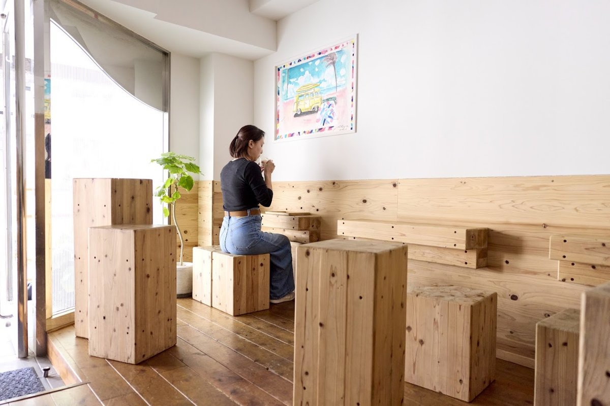
店内のご紹介
薬院の街にある、気さくなスイーツ店です。ご注文ごとに焼き上げる米粉バブルワッフルを眺めて、木の席であたたかいうちに召し上がっても、焼きドーナツを箱に詰めてホテルへお持ち帰りいただいても。
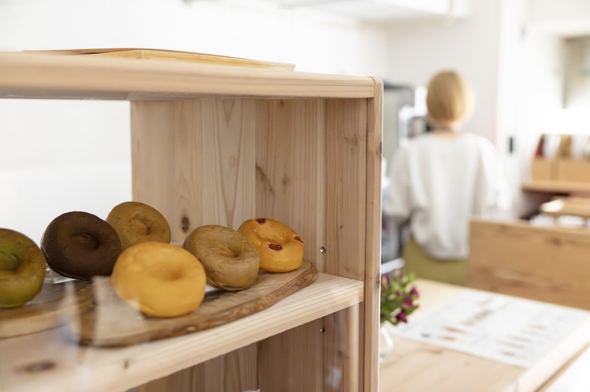
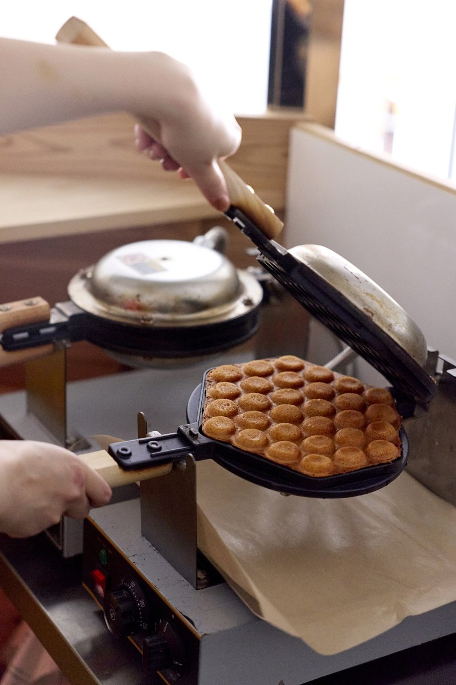
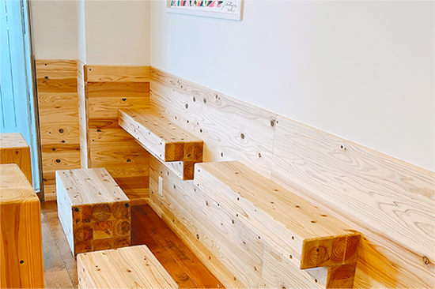
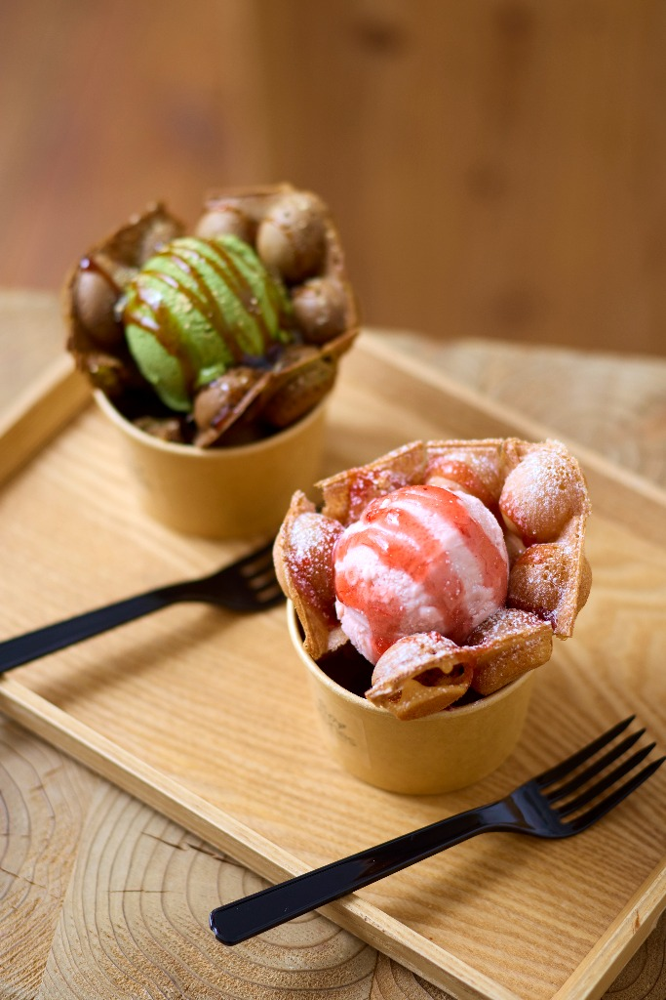
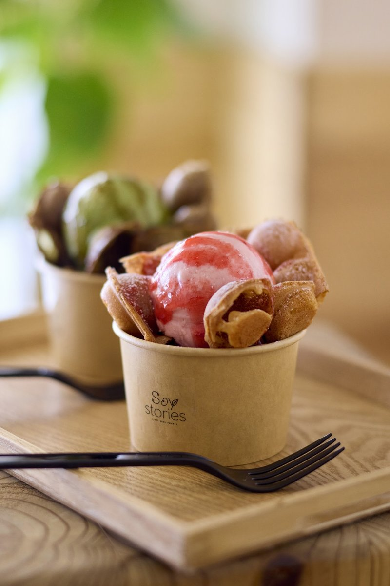
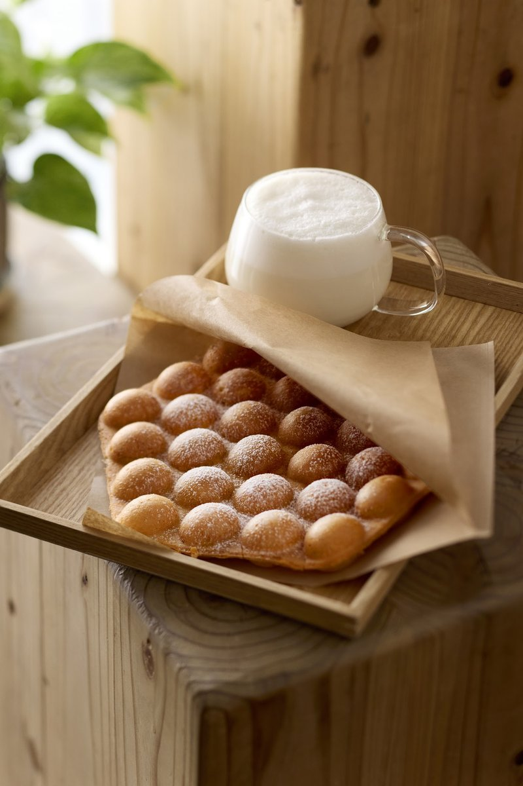
原材料と食事制限について
小麦・乳製品・卵を使わない厨房のルール
SoyStoriesのすべての商品は100％植物性（ビーガン）でグルテンフリーです。小麦、乳製品、卵、そしてはちみつやゼラチンなどの動物由来の原材料は、厨房に持ち込みません（小麦については、スタッフ個人の食事も含みます）。白砂糖も使用していません（てんさい糖や植物由来の甘味料で、やさしく甘みをつけています）。
避けたい原材料で絞り込む：
上の原材料を選ぶと、定番メニューを絞り込めます。
季節商品やドリンクには、オレンジやカシューペーストなど、ほかの原材料を使う場合があります。ご注文前にスタッフへお尋ねください。FoodHug公式アレルギー情報ページを見る →
季節限定
定番メニューのほかに、季節限定のパフェ、ワッフルカップ、ホット／アイスのドリンクもつくっています。
今の季節限定メニューはInstagramで · @soystories_yakuin →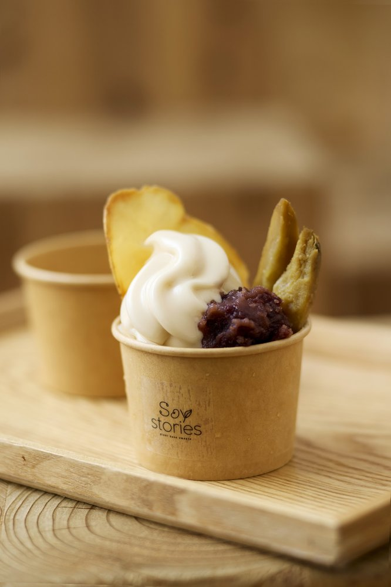
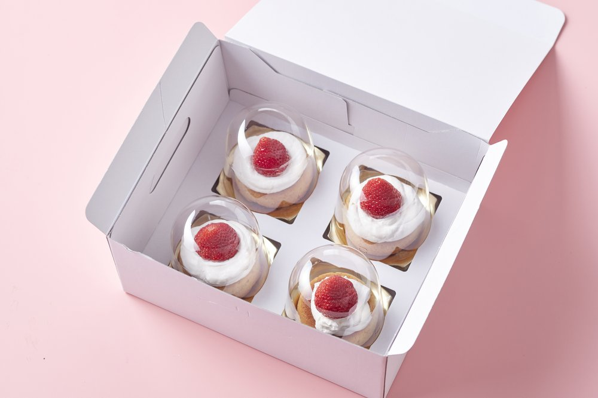
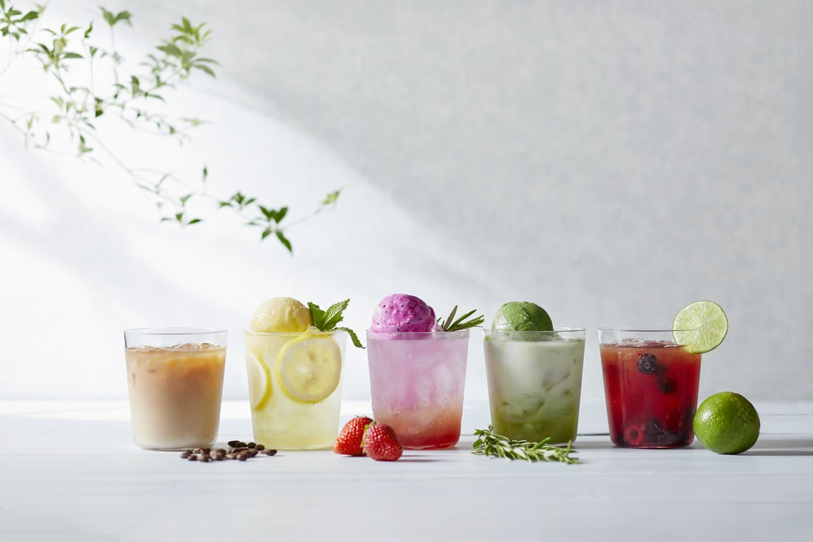
テイクアウト・お土産
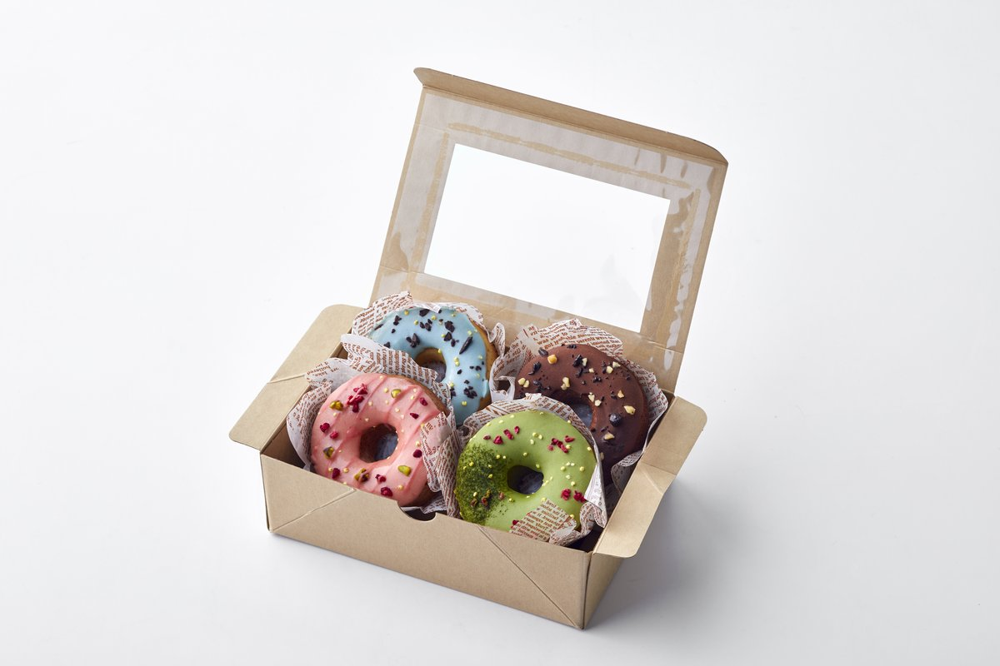
常温で約1週間保存できます
しっとりとしたアーモンド＆米粉のグレーズのケーキドーナツ（1個430円・大豆不使用レシピ）は、常温で約1週間保存できます。ホテルでの滞在や新幹線での移動、フライトにも持ち運びやすい一品です。
「私はセリアック病ですが、そうではない夫と息子と一緒に来ました。バブルワッフルも、ソイアイスも、ドーナツも、家族みんなが大満足でした！とてもクリーミーなので、乳製品不使用だと言われなければ気づかないほど。フレーバーも素晴らしかったです。タクシーで足を運ぶ価値は間違いなくあります！」
「ワッフルと純豆乳ソフトクリームが特においしく、温かさとクリーミーさの絶妙なバランスでした。英語のメニューがあるので注文もとても簡単で、スタッフの方もとても丁寧で親切でした！」
「欧米でよく見かける、味気ない大豆風味のアイスクリームとはまったくの別物です。このお店は一段上をいっています！注文ごとに焼くカリカリのワッフルに、試せる無料のトッピングのトレーも付いていて、天国にいる気分でした。」
「このメニューの中に、おいしくないものがあるなら探してみて、と言いたいくらいです！SoyStoriesのおかげで、アレルギーや特別な食事制限のある人も甘いものを楽しめます。遅めの夕食のあとにビーガンのデザートが食べられて、本当にうれしかったです。」
「ワッフルはとてもカリカリで、甘すぎませんでした。私のお気に入りは、抹茶アイスと、自分で選べるトッピングのトレー（黒糖シロップがおすすめです！）。レモンのドーナツも食べましたが、アーモンドプードルの生地でしっとりしていて、おいしかったです。」
「アイスが豆乳でできているなんて、まったくわかりません。とてもおいしくて、ワッフルも絶品です。滞在中に、抹茶アイスをのせたワッフルを2回も食べてしまいました。やめられませんでした！オーナーさんはとても気さくで、落ち着いた雰囲気でした。」
「私は豆乳ホイップクリームのワッフルを、パートナーはラージサイズのソフトクリームのワッフルを注文しました。トッピングと英語のメニューを持ってきてくれました。2回目も来店して、ホテル用にケーキドーナツを買いました。手頃な価格で、素敵なスタッフさんでした！」
「私はグルテンフリーでもビーガンでもありませんが、いただいたデザートはどれもとても気に入りました。両親と私で、黒ごま、いちご、チョコレートのバブルワッフルを食べました。どれも風味豊かでクリーミー。どなたにもおすすめです！」
「このアイスは本当に、本当においしい！私たちはアメリカから来た13年来のビーガンですが、正直、この抹茶アイスはこれまで食べたビーガンアイスの中で一番かもしれません。帰国したら、このお店のことを夢に見そうです。」
「ここのケーキドーナツは、ビーガンかどうかに関係なく、これまでの人生で食べた中で一番おいしいドーナツです。ほどよくずっしり、しっとりしていて、甘さもちょうどいい。」
GoogleマップとHappyCowに投稿された旅行者の口コミからの抜粋です（原文は英語で、ここでは日本語に訳しています。あくまで個人の体験談です。アレルギーのある方は、必ず商品ごとの原材料をご確認ください）。
ストーリーとこだわり
SoyStoriesがめざすのは、ビーガンの暮らしをしている方も、食物アレルギーのある方も、日本の素材そのものが好きな方も、だれもが「ゆめみたい」と思える場所をつくることです。
家族や友人と同じテーブルを囲んで、まったく同じスイーツを、心配なく楽しめるしあわせ。それをかたちにするために、薬院で毎日、できたてのスイーツを焼き上げ、巻き上げています。
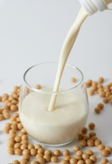
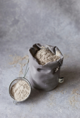
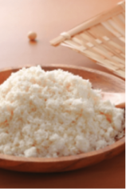
よくあるご質問
はい。SoyStories 薬院店のスイーツとドリンクは、すべて100％植物性（ビーガン）です。肉、魚、乳製品、卵、はちみつ、ゼラチンは、どの商品にも使っていません。
当店の商品はすべて、グルテンフリーの米粉またはアーモンドプードルでつくっており、小麦・乳製品・卵は厨房に持ち込みません（小麦については、スタッフ個人の食事も含みます）。ただし、同じ厨房で大豆、アーモンド、ごま、山芋、りんご、もも、オレンジを扱っているため（また、ビーガンティラミスなど一部の季節・デリバリー商品にはカシューナッツを使う場合があります）、微量のアレルゲンの混入を完全になくすことはできません。重度のアレルギーやセリアック病の方は、商品ごとの原材料をご確認のうえ、ご注文前にスタッフへご相談ください。
このページのアレルゲンチェッカーと全26品のメニュー表、またはFoodHugの公式アレルギー情報ページでご確認いただけます。カウンターのスタッフにお尋ねいただくこともできます。
商品によって異なります。
• 大豆：バブルワッフル、豆乳ソフトクリーム、豆乳ホイップ、焼き大豆ドーナツ、ジェラート4フレーバーに使っています。大豆不使用なのは、グレーズのケーキドーナツ6種（430円）と、フルーツのジェラート4フレーバー（ベリーミックス、ジューシードラゴンフルーツ、爽やかりんご、ジューシーすぎるもも）です。
• アーモンド（ナッツ類）：グレーズのケーキドーナツ（430円）と、ジェラートのとろけるショコラに使っています。（注：ビーガンティラミスなど一部の季節・デリバリー商品には、カシューペーストを使う場合があります。）
• ごま：黒ごまバブルワッフルと、黒ごま大豆ドーナツに使っています。
• 山芋（やまいも）：もちもちの食感を出すために、焼き大豆ドーナツ6種（330円）に使っています。
白砂糖は使っていません。商品に応じて、てんさい糖、オーガニックのアガベやメープル、天然の植物由来の甘味料でやさしく甘みをつけています。白砂糖を使っていないという意味であり、糖分ゼロ（シュガーフリー）という意味ではありませんのでご注意ください。
毎日11:00〜22:00の営業で、ラストオーダーは21:45です。定休日はありません。営業時間の臨時変更や特別な休業日は、Instagram（@soystories_yakuin）でお知らせします。
バブルワッフルとソフトクリームは、ラストオーダー（21:45）までその都度おつくりしますが、ドーナツやジェラートの一部のフレーバーは、夜遅い時間に売り切れることがあります。特定のフレーバーやギフトボックスをご希望の場合は、Instagram（@soystories_yakuin）のDMでご連絡ください。
店内はコンパクトで、メイン席4席と木のキューブスツールがあります。ベビーカーやスーツケースも店内にお持ち込みいただけます。お一人様あたりの最低注文数はなく、シェアも歓迎です。
• バブルワッフル＆豆乳ソフトクリーム：テイクアウトもできますが、温かいワッフルでソフトクリームがすぐに溶けてしまうため、店内か店のすぐ外で、すぐにお召し上がりいただくことを強くおすすめします。
• グレーズのケーキドーナツ（430円）：常温で約1週間保存できます。ホテルでのおやつ、新幹線、お土産にいちばんおすすめです。
• 焼き大豆ドーナツ（330円）：冷凍（または店内で温めて）お渡しします。常温で持ち歩くと自然解凍されますので、冷蔵庫で保管し、3日以内にお召し上がりください。
• カップのクラフトジェラート（490円）：冷凍でお渡しします。保冷剤入りの保冷バッグもご用意しています（4点以上のお買い上げで無料）。
焼き大豆ドーナツをその場で食べたい場合は、店内で温めますので、スタッフにお声がけください。ホテルやご自宅へ持ち帰る場合は、600Wの電子レンジで約1分温めてください（自然解凍後に軽くトーストしても）。焼きたてのような、もちもちの食感になります。
現金（日本円）、主要なクレジットカード（Visa、Mastercard、JCB、American Express、Diners Club）、交通系ICカード（Suica、PASMO、ICOCA、SUGOCA、nimoca、はやかけん）、iD、QUICPay、PayPayをご利用いただけます。メニューの価格はすべて税込です。
福岡市地下鉄七隈線で薬院大通駅へ行き、2番出口から薬院六つ角方面へ徒歩2〜3分（約160m）です。天神南駅からは地下鉄で約4分、博多駅からは約9分です。ソフトクリームの光る看板が目印の、1階の店舗をお探しください。
カウンターに、英語・韓国語・繁体字中国語の紙のメニューをご用意しています。スタッフが基本的な英語を話せるときでも、英語ページでは各商品の「Show staff」ボタンから、日本語の注文画面（店内飲食／テイクアウトの切り替え付き）をスマートフォンに表示できます。
福岡でお待ちしています
Instagram @soystories_yakuin へメッセージをお送りください。
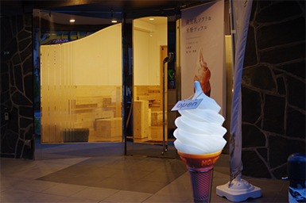
入口の目印：レンガ造りのマンション（チサンマンション第3博多）の1階と、通り沿いで光る白いソフトクリームの看板が目印です。
タクシーの運転手さんに、この画面をお見せください
〒810-0022
福岡市中央区薬院2丁目2-24
チサンマンション第3博多 1階
SoyStories 薬院店（地下鉄七隈線「薬院大通駅」2番出口から薬院六つ角方面へ徒歩約2〜3分）
ご利用いただけるお支払い方法